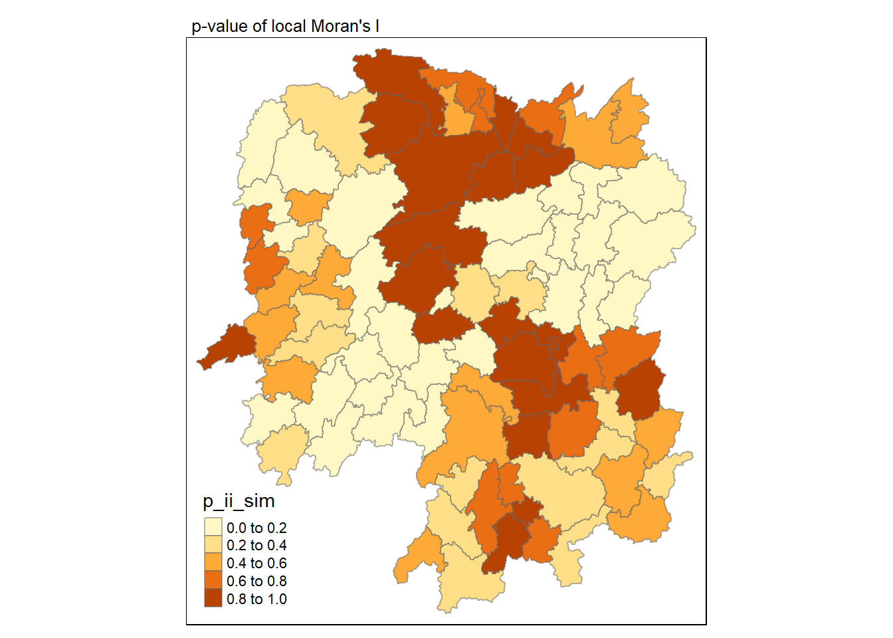
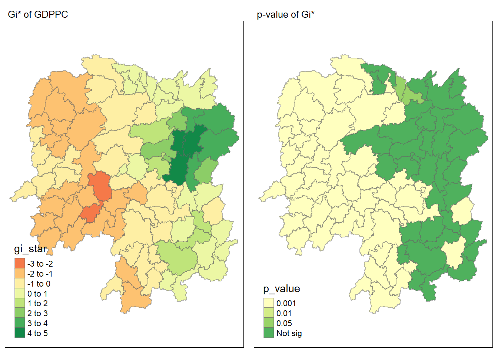

Reading layer `Hunan' from data source
`C:\Users\yozaf\SMUY3S2\Geospatial\IS415-GAA\In-class_Ex\In-class_Ex05\data\geospatial'
using driver `ESRI Shapefile'
Simple feature collection with 88 features and 7 fields
Geometry type: POLYGON
Dimension: XY
Bounding box: xmin: 108.7831 ymin: 24.6342 xmax: 114.2544 ymax: 30.12812
Geodetic CRS: WGS 84In-Class Exercise 5: Global and Local Measuers of Spatial Autocorrelation - sfdep methods
Packages
We are using sfdep, not spdep
Data
Loading Data
We can track to see which columns are the same for both dataset
Combining data using left_join
Plot Coropleth
Contiguity Weights
We can try using the tidyverse method so that it can run in one chunk
This converges the nb and wt in one table so that it is easier to see for us visually, without using command lines
Computing Moran’s I
Global Moran’s I
$I
[1] 0.30075
$K
[1] 7.640659
Moran I test under randomisation
data: x
weights: listw
Moran I statistic standard deviate = 4.7351, p-value = 1.095e-06
alternative hypothesis: greater
sample estimates:
Moran I statistic Expectation Variance
0.300749970 -0.011494253 0.004348351 Monte Carlo Global Moran’I Permutation test
This performs simulation, making it more reliable compared to the normal Moran’I test that only checks for one test data. nsim=99 will run the simulation 100 times as it uses 0 based indexing
Monte-Carlo simulation of Moran I
data: x
weights: listw
number of simulations + 1: 100
statistic = 0.30075, observed rank = 100, p-value < 2.2e-16
alternative hypothesis: two.sidedComputing Local Moran’s I
Simple feature collection with 88 features and 21 fields
Geometry type: POLYGON
Dimension: XY
Bounding box: xmin: 108.7831 ymin: 24.6342 xmax: 114.2544 ymax: 30.12812
Geodetic CRS: WGS 84
# A tibble: 88 × 22
ii eii var_ii z_ii p_ii p_ii_sim p_folded_sim skewness
<dbl> <dbl> <dbl> <dbl> <dbl> <dbl> <dbl> <dbl>
1 -0.00147 0.00177 0.000418 -0.158 0.874 0.82 0.41 -0.812
2 0.0259 0.00641 0.0105 0.190 0.849 0.96 0.48 -1.09
3 -0.0120 -0.0374 0.102 0.0796 0.937 0.76 0.38 0.824
4 0.00102 -0.0000349 0.00000437 0.506 0.613 0.64 0.32 1.04
5 0.0148 -0.00340 0.00165 0.449 0.654 0.5 0.25 1.64
6 -0.0388 -0.00339 0.00545 -0.480 0.631 0.82 0.41 0.614
7 3.37 -0.198 1.41 3.00 0.00266 0.08 0.04 1.46
8 1.56 -0.265 0.804 2.04 0.0417 0.08 0.04 0.459
9 4.42 0.0450 1.79 3.27 0.00108 0.02 0.01 0.746
10 -0.399 -0.0505 0.0859 -1.19 0.234 0.28 0.14 -0.685
# ℹ 78 more rows
# ℹ 14 more variables: kurtosis <dbl>, mean <fct>, median <fct>, pysal <fct>,
# nb <nb>, wt <list>, NAME_2 <chr>, ID_3 <int>, NAME_3 <chr>,
# ENGTYPE_3 <chr>, County <chr>, GDPPC <dbl>, Year <dbl>,
# geometry <POLYGON [°]>Visualizing Local Moran’s I

Visualizing p-value of Local Moran’s I

Visualizing LISA Map

Hot Spot and Cold Spot Analysis (HCSA)
Computing Local Gi* Statistics
Simple feature collection with 88 features and 17 fields
Geometry type: POLYGON
Dimension: XY
Bounding box: xmin: 108.7831 ymin: 24.6342 xmax: 114.2544 ymax: 30.12812
Geodetic CRS: WGS 84
# A tibble: 88 × 18
gi_star e_gi var_gi p_value p_sim p_folded_sim skewness kurtosis nb
<dbl> <dbl> <dbl> <dbl> <dbl> <dbl> <dbl> <dbl> <nb>
1 0.0416 0.0114 6.41e-6 0.0493 9.61e-1 0.7 0.35 0.875 <int>
2 -0.333 0.0106 3.84e-6 -0.0941 9.25e-1 1 0.5 0.661 <int>
3 0.281 0.0126 7.51e-6 -0.151 8.80e-1 0.9 0.45 0.640 <int>
4 0.411 0.0118 9.22e-6 0.264 7.92e-1 0.6 0.3 0.853 <int>
5 0.387 0.0115 9.56e-6 0.339 7.34e-1 0.62 0.31 1.07 <int>
6 -0.368 0.0118 5.91e-6 -0.583 5.60e-1 0.72 0.36 0.594 <int>
7 3.56 0.0151 7.31e-6 2.61 9.01e-3 0.06 0.03 1.09 <int>
8 2.52 0.0136 6.14e-6 1.49 1.35e-1 0.2 0.1 1.12 <int>
9 4.56 0.0144 5.84e-6 3.53 4.17e-4 0.04 0.02 1.23 <int>
10 1.16 0.0104 3.70e-6 1.82 6.86e-2 0.12 0.06 0.416 <int>
# ℹ 78 more rows
# ℹ 9 more variables: wts <list>, NAME_2 <chr>, ID_3 <int>, NAME_3 <chr>,
# ENGTYPE_3 <chr>, County <chr>, GDPPC <dbl>, Year <dbl>,
# geometry <POLYGON [°]>Visualizing Gi*

Visualizing p-value of HCSA

Visualizing Local HCSA

Visualizing Hot Spot and Cold Spot Areas